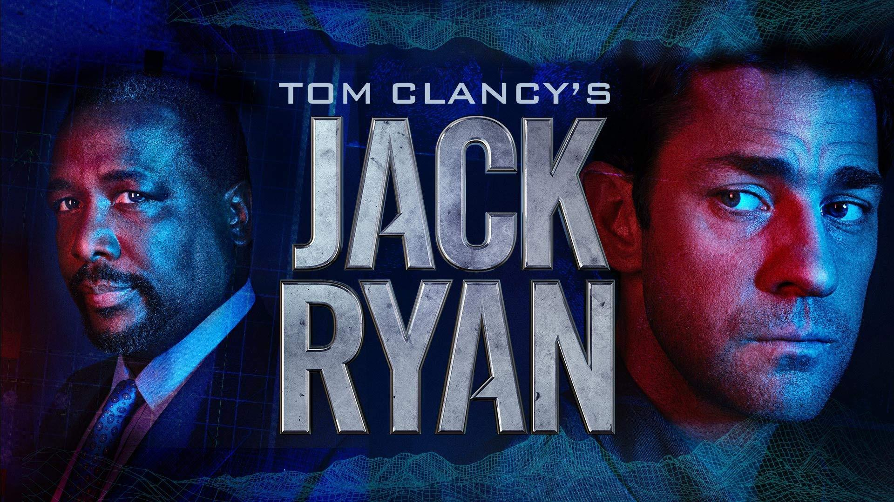
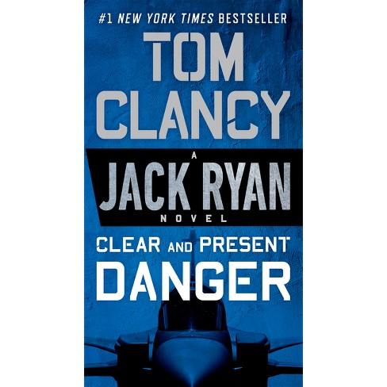
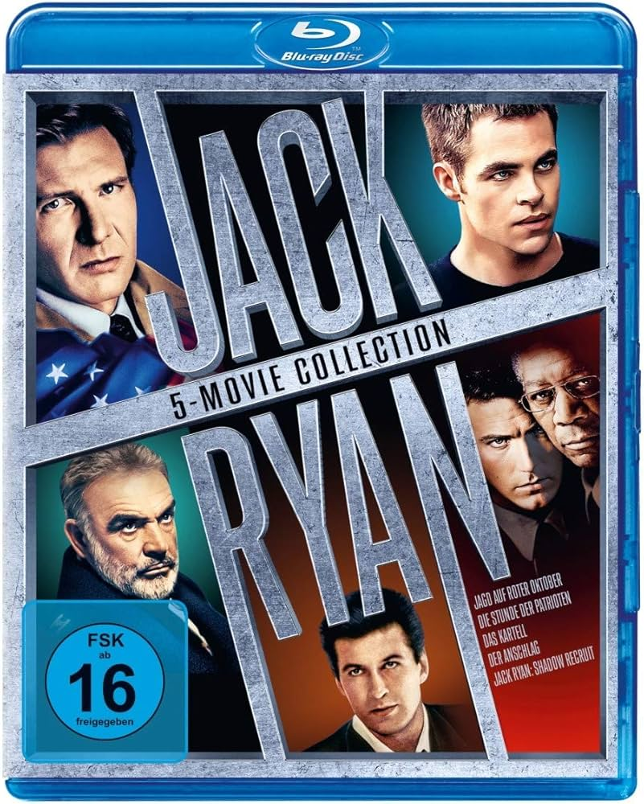
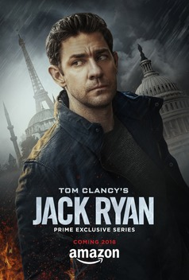

Welcome to the Jack Ryan Universe
Welcome to the Jack Ryan Universe, a world filled with thrilling espionage, political intrigue, and high-stakes adventures. Created by the legendary author Tom Clancy, this universe has captivated millions of readers and viewers around the globe. The Jack Ryan Universe spans across a series of best-selling novels, blockbuster movies, and a highly acclaimed TV series, each bringing the iconic character of Jack Ryan to life in different ways.He works in CIA headquarters which is shown below in the embedded map
Jack Ryan, a former Marine turned CIA analyst, is a hero whose intelligence, courage, and determination have made him a beloved character in the world of political thrillers. Whether you are a long-time fan or new to the universe, there is something for everyone to enjoy. Dive into the intricate plots of the novels, experience the cinematic excitement of the movies, or get hooked on the intense drama of the TV series. Explore the sections below to learn more about each facet of the Jack Ryan Universe.
- Explore the extensive list of novels
- Watch blockbuster movies
- Enjoy the latest TV series
- Former Marine
- CIA Analyst
- Hero of political thrillers
- "The Hunt for Red October"
- "Patriot Games"
- "Clear and Present Danger"
- "The Sum of All Fears"
- "Debt of Honor"
- "The Hunt for Red October" (1990)
- "Patriot Games" (1992)
- "Clear and Present Danger" (1994)
- "The Sum of All Fears" (2002)
- "Jack Ryan: Shadow Recruit" (2014)
- "Season 1: Terrorist Threats"
- "Season 2: Political Intrigue"
- "Season 3: Global Espionage"
- "Season 4: Cyber Warfare"
About Jack Ryan

Jack Ryan is the creation of Tom Clancy, one of the most renowned authors of political thrillers. Ryan is a multifaceted character who has evolved throughout numerous novels, movies, and TV shows. Initially introduced as a former Marine and history professor, Ryan's life takes a dramatic turn when he joins the CIA as an analyst. His keen intellect and ability to think strategically make him an invaluable asset in the world of intelligence and national security.
Over the years, Jack Ryan has been portrayed by several actors, each bringing their unique interpretation to the character. Despite these different portrayals, the essence of Jack Ryan remains the same: a man committed to protecting his country from various threats, whether they come from rogue states, terrorist organizations, or internal corruption. Ryan's adventures often see him in the midst of geopolitical crises, where his quick thinking and bravery are put to the test.
Books
The Jack Ryan Universe began with Tom Clancy's novels, starting with the publication of "The Hunt for Red October" in 1984. This book introduced readers to Jack Ryan and set the stage for a series of gripping political thrillers that would become best-sellers. Clancy's meticulous attention to detail and his ability to weave complex plots involving military and intelligence operations have made these books a staple in the genre.
The novels cover a wide range of topics, from Cold War tensions to modern-day cyber threats. Each book delves into the intricacies of global politics, espionage, and military strategy, all seen through the eyes of Jack Ryan. Over the years, the series has expanded to include works by other authors, who have continued to explore and expand the Jack Ryan Universe under Clancy's legacy.
Movies
The Jack Ryan character has been brought to life on the big screen by several acclaimed actors, each adding their unique touch to the role. The first film adaptation, "The Hunt for Red October" (1990), starred Alec Baldwin as Jack Ryan and was a critical and commercial success. This was followed by "Patriot Games" (1992) and "Clear and Present Danger" (1994), with Harrison Ford taking over the role and further cementing the character's place in cinematic history.
In the early 2000s, Ben Affleck stepped into the role for "The Sum of All Fears" (2002), a film that explored the threat of nuclear terrorism. More recently, Chris Pine portrayed a younger version of Jack Ryan in "Jack Ryan: Shadow Recruit" (2014), a reboot that offered a fresh take on the character's origins. Each movie adaptation has stayed true to the essence of Jack Ryan while bringing the high-stakes drama and action to new audiences.
TV Shows
The Jack Ryan Universe expanded to television with the Amazon Prime series "Tom Clancy's Jack Ryan," which premiered in 2018. Starring John Krasinski as Jack Ryan, the series has been praised for its modern take on the character and its high production values. The show delves into contemporary geopolitical issues, with Ryan facing threats ranging from terrorist organizations to corrupt government officials.
The TV series offers a more in-depth exploration of Jack Ryan's character, allowing viewers to see his development over multiple episodes and seasons. Krasinski's portrayal has been lauded for bringing both physicality and emotional depth to the role, making the character relatable and engaging. The series has introduced Jack Ryan to a new generation of fans, while staying true to the spirit of Tom Clancy's original vision.